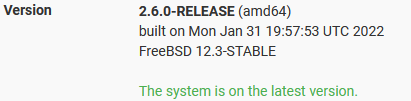

| Ник | Пост | Дата |
|---|---|---|
| biveka4392 | Всем доброго времени суток! Хотел бы попросить помощи по настройке dvtws на pfSense 2.6.0 от знающих людей. Проблема заключается в зацикливании пакетов при обработки их dvtws’ом. Инструкция по настройке из (документации) не сработала из-за выпиливания фаерволла ipfw из pfSense в версии 2.6.0. При следовании инструкции ipfw просто игнорируется и не используется вовсе. Включение captive-portal не помогает так, как его переделали под pf. В связи с этим пришлось изобретать способ перенаправления пакетов на divert-сокет. При использовании данных правил пакеты успешно перенаправляются на divert-сокет и даже успешно обрабатываются dvtws’ом (заблокированный сайт открывается), но обработанные пакеты продолжают возвращаться на обработку в dvtws. Хотел бы попросить помощи в решении данной проблемы. Версия pfSense Команда запуска dvtws(была найдена при помощи blockcheck.sh) Лог работы dvtws: | 2022-09-08T15:24:45.591Z |
| bolvan | ipfw не выпилен из 2.6.0. Модули ipfw, ipdivert присутствуют, загружаются pfctl -d ; pfctl -e | 2022-09-08T18:32:53.600Z |
| biveka4392 | Действительно помогло. | 2022-09-09T03:23:21.187Z |
| Elevator |
Такая же проблема на OPNsense 24.1.10_3 | 2024-07-23T10:36:18.561Z |
| dmshel(Dmshel) | Коллеги, Добрый вечер! А можно пошаговую инструкцию для pfsense. трижды пытался делать по инструкции по ссылке выше, все проделал, финальный выхлоп, как в инструкции, но после этих манипуляций вообще ни один сайт не открывается. делал по доке с момента pfsense. | 2024-08-07T13:45:45.104Z |